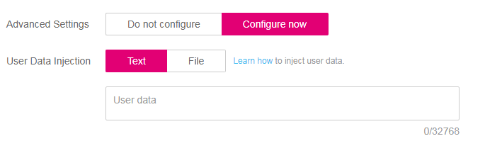
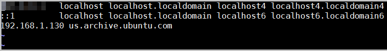
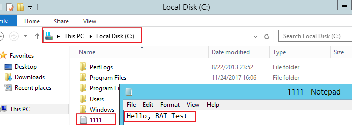
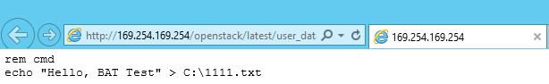
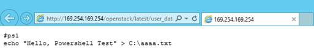

Scenarios
Use the User Data function to pass user data to ECSs to:
- Simplify ECS configuration.
- Initialize the ECS OS configuration.
- Upload your scripts to ECSs during ECS creation.
- Perform other tasks using scripts.
Use Restrictions
- Linux
- The image that is used to create ECSs must have Cloud-Init installed.
- The user data to be specified must be less than or equal to 32 KB.
- If user data is uploaded as text, the data can contain only ASCII characters. If user data is uploaded using a file, the file can contain any characters and the file size cannot exceed 32 KB.
- The image that is used to create ECSs must be a public image, a private image created based on a public image, or a private image with Cloud-Init installed.
- The format of the customized scripts must be supported by Linux ECSs.
- DHCP must be enabled on the VPC network, and port 80 must be enabled for the security group in the outbound direction.
- Windows
- The image that is used to create ECSs must have Cloudbase-Init installed.
- The user data to be specified must be less than or equal to 32 KB.
- If user data is uploaded as text, the data can contain only ASCII characters. If user data is uploaded using a file, the file can contain any characters and the file size cannot exceed 32 KB.
- The image that is used to create ECSs must be a public image, a private image created based on a public image, or a private image with Cloudbase-Init installed.
- DHCP must be enabled on the VPC network, and port 80 must be enabled for the security group in the outbound direction.
Passing User Data
- Create a user data script, the format of which complies with user data script specifications. For details, see Helpful Links.
- When creating an ECS, set Advanced Options to Configure now, and paste the content of the user data script to the User Data text box or upload the user data file.

You can pass user data to an ECS as text or as a file.
Text: Copy the content of the user data script to the text box.
File: Save the user data script to a text file and then upload the file.
Figure 1 User Data
 - The created ECS automatically runs Cloud-Init/Cloudbase-Init and reads the user data script upon startup.
User Data Scripts of Linux ECSs
Customized user data scripts of Linux ECSs are based on the open-source Cloud-Init architecture. This architecture uses ECS metadata as the data source for automatically configuring the ECSs. The customized script types are compatible with open-source Cloud-Init. For details about Cloud-Init, see http://cloudinit.readthedocs.io/en/latest/topics/format.html.
- Script execution time: A customized user data script is executed after the time when the status of the target ECS changes to Running and before the time when /etc/init is executed.
By default, the scripts are executed as user root.
- Script type: Both user-data scripts and Cloud-Config data scripts are supported.
Table 1 Linux ECS script types -
User-Data Script
Cloud-Config Data Script
Description
Scripts, such as Shell and Python scripts, are used for custom configurations.
Methods pre-defined in Cloud-Init, such as the Yum source and SSH key, are used for configuring certain ECS applications.
Format
A script must be started with #!, for example, #!/bin/bash and #!/usr/bin/env python.
When a script is started for the first time, it will be executed at the rc.local-like level, indicating a low priority in the boot sequence.
The first line must be #cloud-config, and no space is allowed in front of it.
Constraint
Before Base64 encoding, the size of the script, including the first line, cannot exceed 32 KB.
Before Base64 encoding, the size of the script, including the first line, cannot exceed 32 KB.
Frequency
The script is executed only once when the ECS is started for the first time.
The execution frequency varies according to the applications configured on the ECS.
- How can I view the customized user data passed to a Linux ECS?
- Log in to the ECS.
- Run the following command to view the customized user data as user root:
curl http://169.254.169.254/openstack/latest/user_data
- Script usage examples
This section describes how to inject scripts in different formats into Linux ECSs and view script execution results.
Example 1: Inject a user-data script.
When creating an ECS, set User Data to As text and enter the customized user data script.
#!/bin/bash echo "Hello, the time is now $(date -R)" | tee /root/output.txt
After the ECS is created, start it and run the cat [file] command to check the script execution result.
[root@XXXXXXXX ~]# cat /root/output.txt Hello, the time is now Mon, 16 Jul 2016 16:03:18+0800
Example 2: Inject a Cloud-Config data script.
When creating an ECS, set User Data to As text and enter the customized user data script.
#cloud-config bootcmd: - echo 192.168.1.130 us.archive.ubuntu.com >> /etc/hosts
After the ECS is created, start it and run the cat /etc/hosts command to check the script execution result.
Figure 2 Viewing operating results

User Data Scripts of Windows ECSs
Customized user data scripts of Windows ECSs are based on the open-source Cloudbase-Init architecture. This architecture uses ECS metadata as the data source for initializing and automatically configuring the ECSs. The customized script types are compatible with open-source Cloudbase-Init. For details about Cloudbase-Init, see https://cloudbase-init.readthedocs.io/en/latest/userdata.html.
- Script type: Both batch-processing program scripts and PowerShell scripts are supported.
Table 2 Windows ECS script types -
Batch-Processing Program Script
PowerShell Script
Format
The script must be started with rem cmd, which is the first line of the script. No space is allowed at the beginning of the first line.
The script must be started with #ps1, which is the first line of the script. No space is allowed at the beginning of the first line.
Constraint
Before Base64 encoding, the size of the script, including the first line, cannot exceed 32 KB.
Before Base64 encoding, the size of the script, including the first line, cannot exceed 32 KB.
- How can I view the customized user data passed into a Windows ECS?
- Script usage examples
This section describes how to inject scripts in different formats into Windows ECSs and view script execution results.
Example 1: Inject a batch-processing program script.
When creating an ECS, set User Data to As text and enter the customized user data script.
rem cmd echo "Hello, BAT Test" > C:\1111.txt
After the ECS is created, start it and check the script execution result. In this example, a text file named 1111 is added to disk C:\.
Figure 3 Creating text file (Batch)
To view the user data passed to the Windows ECS, log in at http://169.254.169.254/openstack/latest/user_data.
Figure 4 Viewing user data (Batch)
Example 2: Inject a PowerShell script.
When creating an ECS, set User Data to As text and enter the customized user data script.
#ps1 echo "Hello, Powershell Test" > C:\aaaa.txt
After the ECS is created, start it and check the script execution result. In this example, a text file named aaaa is added to disk C:\.
Figure 5 Creating text file (PowerShell)
To view the user data passed to the Windows ECS, log in at http://169.254.169.254/openstack/latest/user_data.
Figure 6 Viewing user data (PowerShell)

Case 1
This case illustrates how to use the user data passing function to simplify Linux ECS configuration.
In this example, vim is configured to enable syntax highlighting, display line numbers, and set the tab stop to 4. The .vimrc configuration file is created and injected into the /root/.vimrc directory during ECS creation. After the ECS is created, vim is automatically configured based on your requirements. This improves ECS configuration efficiency, especially in batch ECS creation scenarios.
User data example:
#cloud-config
write_files:
- path: /root/.vimrc
content: |
syntax on
set tabstop=4
set number
Case 2
This case illustrates how to use the user data passing function to set the password for logging in to a Linux ECS.
Parameter |
Requirement |
Example Value |
|---|---|---|
Password |
|
YNbUwp!dUc9MClnv NOTE:
The example password is generated randomly. Do not use it. |
User data example:
- Using a ciphertext password (recommended)
#!/bin/bash echo 'root:$6$V6azyeLwcD3CHlpY$BN3VVq18fmCkj66B4zdHLWevqcxlig' | chpasswd -e;
In the preceding command output, $6$V6azyeLwcD3CHlpY$BN3VVq18fmCkj66B4zdHLWevqcxlig is the ciphertext password, which can be generated as follows:
- Run the following command to generate an encrypted ciphertext value:
python -c "import crypt, getpass, pwd;print crypt.mksalt()"
The following information is displayed:
$6$V6azyeLwcD3CHlpY
- Run the following command to generate a ciphertext password based on the salt value:
python -c "import crypt, getpass, pwd;print crypt.crypt('Cloud.1234','\$6\$V6azyeLwcD3CHlpY')"
The following information is displayed:
$6$V6azyeLwcD3CHlpY$BN3VVq18fmCkj66B4zdHLWevqcxlig
- Run the following command to generate an encrypted ciphertext value:
After the ECS is created, you can use the password to log in to it.
Case 3
This case illustrates how to use the user data passing function to reset the password for logging in to a Linux ECS.
In this example, the password of user root is reset to ******.
Parameter |
Requirement |
Example Value |
|---|---|---|
Password |
|
YNbUwp!dUc9MClnv NOTE:
The example password is generated randomly. Do not use it. |
User data example (Retain the indentation in the following script):
#cloud-config
chpasswd:
list: |
root:******
expire: False
After the ECS is created, you can use the reset password to log in to it. To ensure system security, change the password of user root after logging in to the ECS for the first time.
Case 4
This case illustrates how to use the user data passing function to create a user on a Windows ECS and configure the password for the user.
In this example, the user's username is abc, its password is ******, and the user is added to the administrators user group.
User data example:
rem cmd net user abc ****** /add net localgroup administrators abc /add
After the ECS is created, you can use the created username and password to log in to it.
Case 5
This case illustrates how to use the user data passing function to update system software packages for a Linux ECS and enable the HTTPd service. After the user data is passed to an ECS, you can use the HTTPd service.
User data example:
#!/bin/bash yum update -y service httpd start chkconfig httpd on
Case 6
This case illustrates how to use the user data passing function to assign user root permission for remotely logging in to a Linux ECS. After passing the file to an ECS, you can log in to the ECS as user root using SSH key pair authentication.
User data example:
#cloud-config disable_root: false runcmd: - sed -i 's/^PermitRootLogin.*$/PermitRootLogin without-password/' /etc/ssh/sshd_config - sed -i '/^KexAlgorithms.*$/d' /etc/ssh/sshd_config - service sshd restart